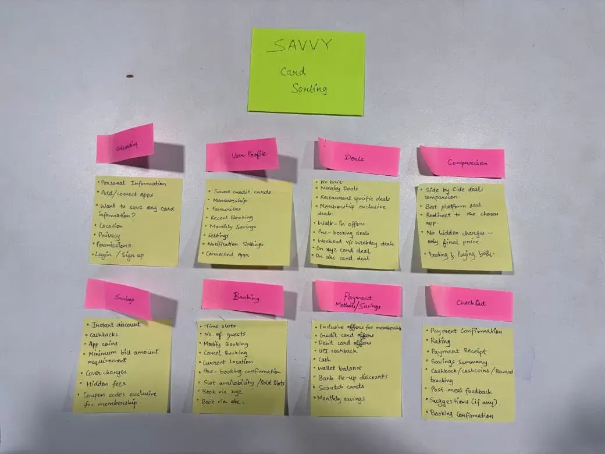
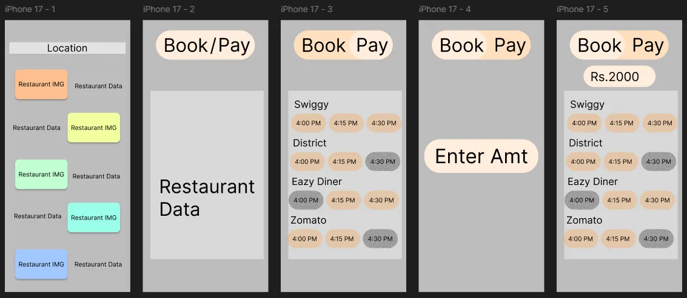
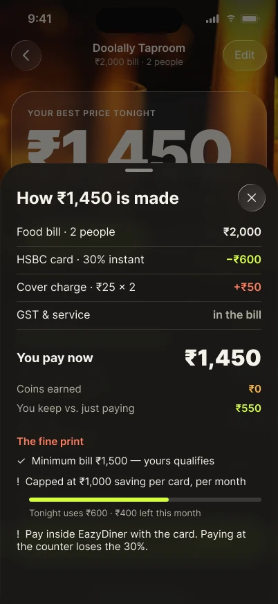

SAVVY: What will dinner really cost? One honest answer, across every dine-out app.
Project overview
SAVVY compares a restaurant's offers on Swiggy Dineout, District and EazyDiner, ranks them by the cash you pay tonight, then hands you to the cheapest app.
Mumbai diners need one honest answer to what a meal will really cost, across every dine-out app.
My part
Everything, on my own: interviews, surveys, the restaurant audit, flows, structure, eight design versions, iOS and Android.
The bill lands. Who pays least?
Four friends, one bill, three apps that each promise a deal. SAVVY's whole job is the ten seconds after the bill arrives.
Concept film, made with AI. Sound is on the controls.
One answer,
no list to read.
Every app shouts a different discount. SAVVY does the maths: offers, coins, card rules, then one price.
Numbers on this page's screens are a prototype example: a ₹2,000 bill for two at Doolally Taproom.
The discount you see
isn't the price you pay.
- Cashback comes laterCoins come later
- One card unlocks itThe best deal needs one bank's card
- Menu marked upSome apps raise in-app prices
- Cover charge, shown late₹25 a person, where there was one
Problem
The same restaurant runs different deals on three or four apps. Coins, card rules and cover charges hide which one is actually cheapest.
Solution
Type the bill once. SAVVY ranks every app by the cash you pay tonight, then hands you to the cheapest. It never books or pays itself.
Five months,
eight versions.
Research first, then structure, then a lot of redesigning until the answer sat at the top.
What I found.
Small, qualitative and Mumbai-only. These are patterns to design from. They aren't market statistics.
people I interviewed distrusted coins as a saving. “I find it very stupid and a scam.”
Semi-structured interviews · R01–R13restaurants I audited were on two or more dine-out apps. 2.9 apps each, on average.
Field auditcover charge a person, where there was one, shown late in the flow.
Field auditAdd: who the 13 were and how you found them (age range, students or working, how they were recruited), and how many people answered each survey.
What diners told me,
and the rules I took from it.
Each rule traces back to what people said or did.
I find it very stupid and a scam.
Coins get their own amber line and never decide the order.
A craving, family, friends or a reel picks the restaurant. Deals come after.
Home is a restaurant search. Deals is a second tab.
If I have no option, I will pay the bill.
At the table: one bill in, one answer out.
Several people pay by UPI, cash or a parent's card.
No card? The “No card” price is the answer.
Three diner types.
The interviews split on two things: whether someone carries a credit card, and how much effort they put into finding a deal.
Reluctant Comparer
No credit card, but puts in the effort to find a deal.
I find it very stupid and a scam… it feels like I've been misdirected.R01 · R03 · R10 · R13
Passive Card Holder
Has cards, but thinks about them late, at checkout.
All the money still leaves my own pocket, so what was the benefit of the discount?R02 · R04 · R09 · R11 · R12
Just-Pay Pragmatist
Low effort. Someone else usually picks the place.
If I have no option, I will pay the bill.R05 · R06 · R08
From craving
to cheapest app.
Rebuilt from my FigJam board. Switch between the user flow, the three task flows, the site map, the empathy maps and the access rules. Each one builds as you open it.

What I tried first,
and why it lost.
SAVVY can't book, can't pay, and the big apps have no reason to help a comparison tool. Those limits shaped every call below.
It pushes people to the loudest offer, and people pick the place first anyway.
Search a place, then see its real price on every app.
The walk-in “pay” moment is where people lost money. A tab buries it.
Paying at the table is one tap away.
It hides the thing people distrusted most.
Always visible, never used for ranking.
The big apps won't help, so it needed a partner who gains from it.
Bookings and a no-show tool, with “book a table” as a main feature.
It started in a notebook.
Before Figma I drew every screen by hand, lettered A to G so I could talk through the flow. Then a rough grey pass in Figma to test the order. Open any page to read it full size.



Eight versions, from a list to read to one answer.
The same moment in every version: comparing the apps. Follow the road. Click any screen to see it bigger.
The final design system
The answer moved to the top. The maths moved underneath it.
How the colours work.
Lime is the next step. One lime button per screen.
Amber means coins. Never used for anything else, so coins can't pass as cash.
Night and day. Food photography stays the background in both.
UI type: Inter. The price is always the biggest thing on the screen.
Pick the place, type the bill.
From tonight's places to one answer in four screens.


The answer screen
Hand off, then check.
The part most comparison tools skip: did the price you were promised actually hold?


Same answer, in daylight.
Teal replaces lime, a serif carries the price, and the order never changes: price, what you keep, then the maths.


Same answer, Material 3.
Android gets its own patterns: Material 3 components, a sticker for what you keep, and a Live Update chip instead of the Dynamic Island.


What the app shows while it works.
Every state tells you what SAVVY is doing and what it isn't: nothing is booked or paid, and a deal that didn't hold never counts.

The ring counts the apps, each row ticks off, and the Dynamic Island shows “2 of 3”. Nothing is booked or paid.
Every line of the maths, including the cover charge most apps show late.
A minimum bill, a monthly cap with how much is left, and a warning that paying at the counter loses the discount.
The answer arrives.
Motion shows the work SAVVY does while you wait. The clips loop while they're on screen; pause any of them.
Swipe to discover.
Right to book, left to skip, up for the full profile. It stays out of the main flow until it's tested.


I haven't tested it yet.
This is how I will.
The design follows from research, but nobody has used it yet. The ₹550 on these screens is a made-up example from the prototype.
You have a ₹2,000 bill at a restaurant you know. Which option costs you least tonight, and why?
Still to prove
- Night theme against day theme
- Does one Book / Pay toggle help, or hide two different jobs?
- How often people don't show up for a booking
- Whether anyone wants a membership
The hard constraint
None of the apps offer an offer-data API, and hand-offs into them can be restricted. A real SAVVY needs a data source and a way to mark offers that have gone stale.